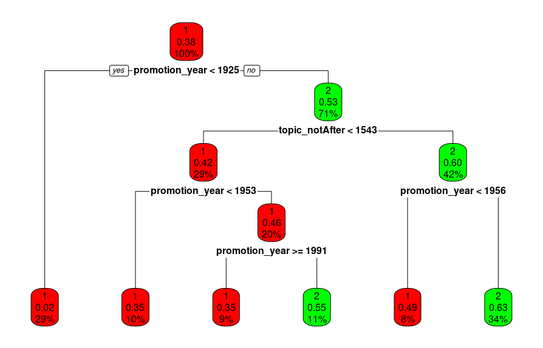

Perspectives et horizon
À l’occasion du bicentenaire de l’École nationale des chartes, l’ADEMEC, en partenariat et avec l’aide de l’École, organise un « hackathon bicentenaire ». L’objectif du hackathon est de proposer des créations numériques mettant en valeur les données sélectionnées, pour aborder l’histoire de l’École et sa production scientifique.
L'analyse des métadonnées associées aux positions de thèse nous a également incités à nous pencher sur des questions sociologiques, en particulier l'évolution de la place des femmes au sein de l'école ainsi que leurs choix scientifiques. Nous nous sommes pour cela fondés sur une méthode de classification non-supervisée : les arbres de décision. Cette méthode très visuelle permet de mettre en évidence les variables qui ont le plus de poids dans l'attribution d'une prédiction (ici, le fait d'être un homme ou une femme chartiste). Ces analyses se sont fondées sur quatre variables : le genre, l'année de promotion, le fait d'avoir été professeur à l'École des chartes, la période d'étude (avant ou après telle date). Les résultats se présentent ainsi :
